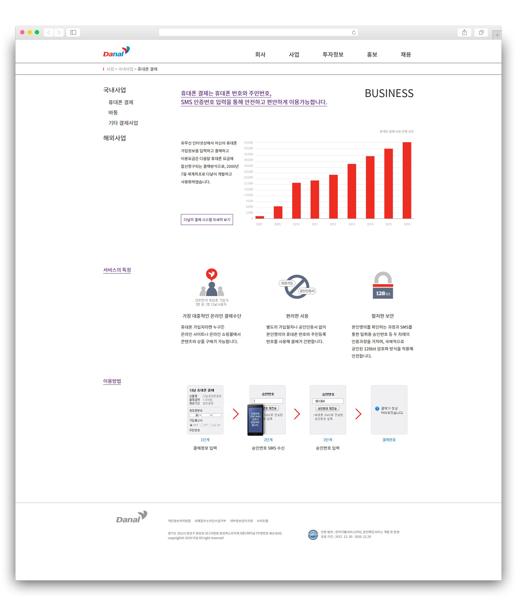

-

- 
-
 원본사이트
원본사이트
02다날
2 weeks
- 기획 100%
- 디자인 100%
- 코딩 100%
- HTML5
- CSS3
- IE 9 +
- CROSS BROWSING
- JQUERY
- BX-SLIDER
IT 회사의 이미지 전달을 목표로 작업하였습니다. 정적인 기존 홈페이지의 경우 기술을 다루는 느낌이
들지 않는다고 판단하였고 메인 화면에서 제공되는 정보가 형식적이라고 생각하였습니다. 이를
개선하기 위해 중요한 정보들은 모두 메인 화면에서 확인할 수 있도록 디자인 하였고 다날의 정체성을
느낄 수 있고 기술과 신뢰를 의미하는 블루를 메인 컬러로 잡고 레드 컬러를 포인트로 하여 작업하였습니다.